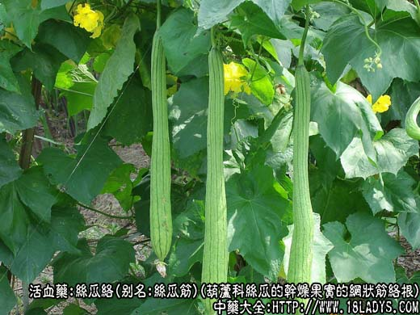
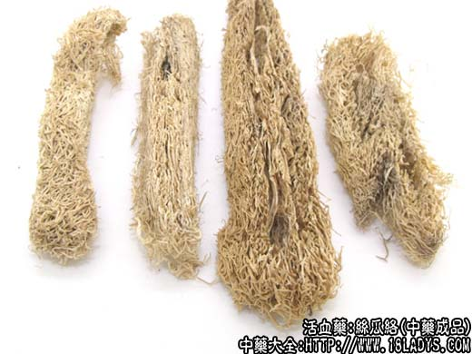
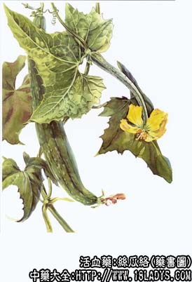

本品为较常用中药。始载《本草纲目》，原名丝瓜。
别名：丝瓜筋。
来源：为葫芦科一年生攀援草本植物丝瓜的干燥果实的网状筋络。均为栽培。
产地：主产于江苏、浙江等地，全国大部分地区均有产。
采收加工：秋季果实成熟时采摘，搓去果皮及果肉或用水浸泡，至果皮、果肉腐烂，取出洗净，除去种子，晒干。
性状鉴别：本品呈长筒形或长棱形，略弯曲，两端渐细，一般长30～70厘米，中间直径7～10厘米。白色或黄色，全体系由多层丝样筋络缠绕交织而成的网状物。体轻，质韧，有弹性，不易折断。切断面有三个大孔洞，有时里面残留黑色种子。气无，味淡。
以筋细、质韧，洁白轻松，无子者为佳。
主要成分：含多缩木醣和纤维素。
功效与作用：祛痰、祛风通络、活血消肿。据观察，作用为利尿解毒和清热。
炮制：切段，生用或炒炭。
性味：甘、平。
归经：入肺、胃、肝经。
功能：清热解毒、活血通络、利尿消肿。
主治：筋骨酸痛、胸胁痛、乳汁不通、经闭、睾丸肿痛、便血、崩漏等症。
临床应用：1、用于肺热咳嗽（气管炎、肺炎），小儿和老人均可用。如为小儿急性支气管炎、肺炎，有高热、胸痛、痰难咳出，可于麻杏石甘汤或苇茎汤基础上酌加丝瓜络9～15g，能加强清热祛痰作用。至于老年慢性气管炎，近年来已开始试用丝瓜络治疗，有一定止咳、祛痰作用，但效果不如丝瓜藤好。
2、用于跌打损伤、肿痛，尤其腰背和胸胁部瘀痛，常配行气镇痛药，如枳壳、橘络、柴胡等，方如通络止痛汤。
3、用于风湿关节痛、肌肉痛，尤其急性发作、局部肿痛、小便不利属于热痹者较适合，配防己、桑枝等，方如桑尖汤，或加入清热泻火剂中亦可。
此外，夏天外感暑湿，四肢困倦，小便短赤，可用丝瓜络、冬瓜皮、生薏苡仁各30g，水煎服。
用量：9～12g，大剂可用至30g。
处方举例：通络止痛汤：丝瓜络9g、橘络9g、枳壳9g、白蔻壳1.5g、柴胡6g、白芍9g、乳香6g、没药6g，水煎服。
注：广东、广西所产的丝瓜（带皮者），为同科植物棱角丝瓜（粤丝瓜），其干燥果实，长棱形，具韧性的果柄，果皮来黄色，上有8～10条纵棱脊。本品在广东、广西习称丝瓜布药用。其果实的筋络，与丝瓜的筋络相似。
附：丝瓜子
来源：为丝瓜的干燥种子。
产地：同丝瓜。
性状鉴别：呈扁平椭圆形，长约1.2厘米，宽约7毫米，厚约2毫米。种皮灰黑色或黑色，边缘有极狭的翅。种皮稍硬，剥开后内有种仁一枚，外被灰绿色的内种皮；子叶两片，黄白色。气无，味苦。
棱角丝瓜的种子较厚，卵形，黑色，有网状纹，边缘无翅。余同丝瓜子。
效用：清热化痰，润燥，有驱虫作用。